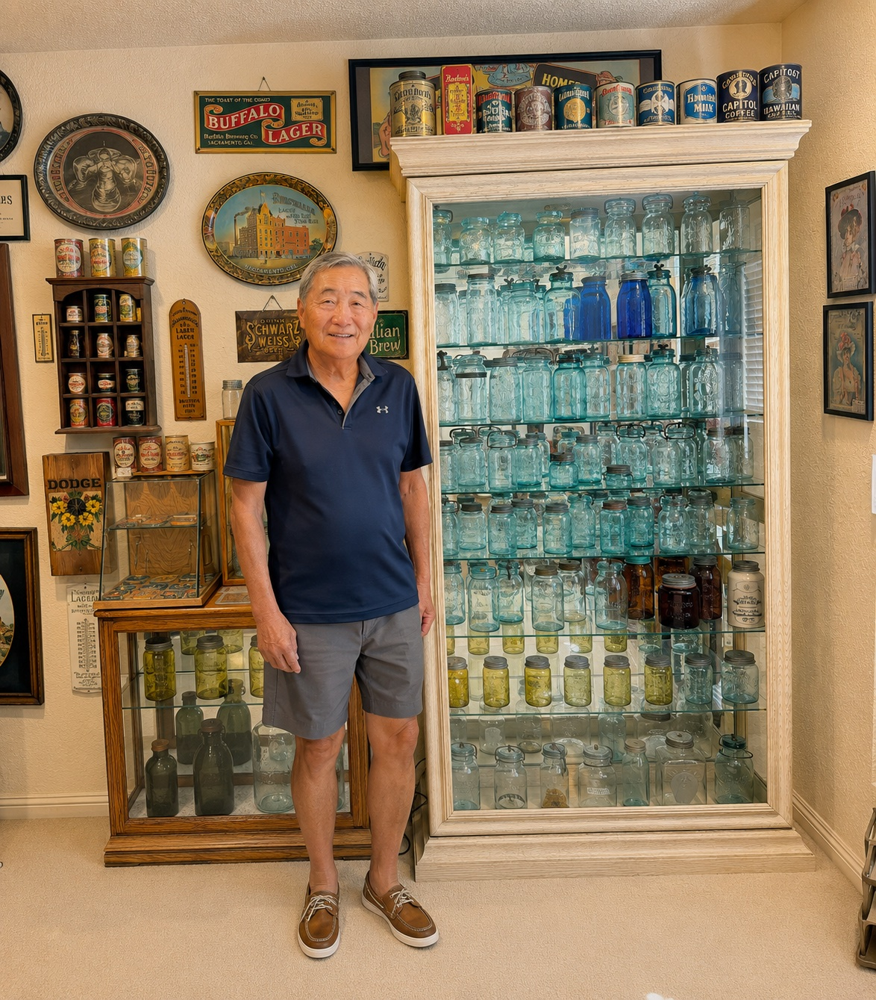

About Jerry

I started collecting in the late 1970s and started with Redbook #3. I remember my first good find was a The Best jar, which takes a wooden wedge. Then I went to Monterey for a bottle show and met Frank Peters. He was doing an educational talk on fruit jars, and from that day on I was hooked. By the way I was able to complete The Best jar with original clamp, thank you Randy!
I like lots of different jars and am especially drawn to rare pints and jars with unusual closures or colors. I have some Mason 1858s, Flaccus jars, and jars with unusual closures. Collecting has been a lot of fun for me and I have met some great people in the hobby.
If you click on the images in the collection you will get a larger version of the picture and some descriptive information on the jar.
I am interested in obtaining Western jars. Looking for an A.P. Brayton, California jar, and Mason Croweleytown Midget. If you are interested in selling one of these, I would appreciate an email from you.
Closures that I need are a band and lid for A.E. Bray jar, and a lid for a Midget Trademark Advanced jar. If you have good closures for sale, email me and let me know what you have.
Well, enjoy my site — it was fun putting it together. A special thanks to Chris Casey for building the site and Allison Ikeda for taking the pictures.
You can reach me by email at ikeda.jerry@gmail.com.
— Jerry Ikeda